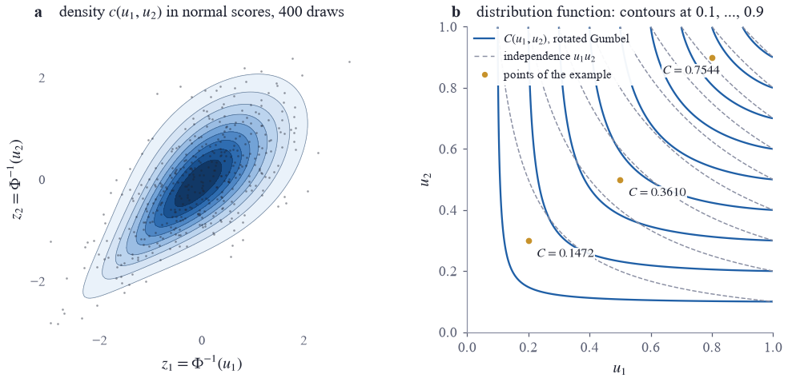
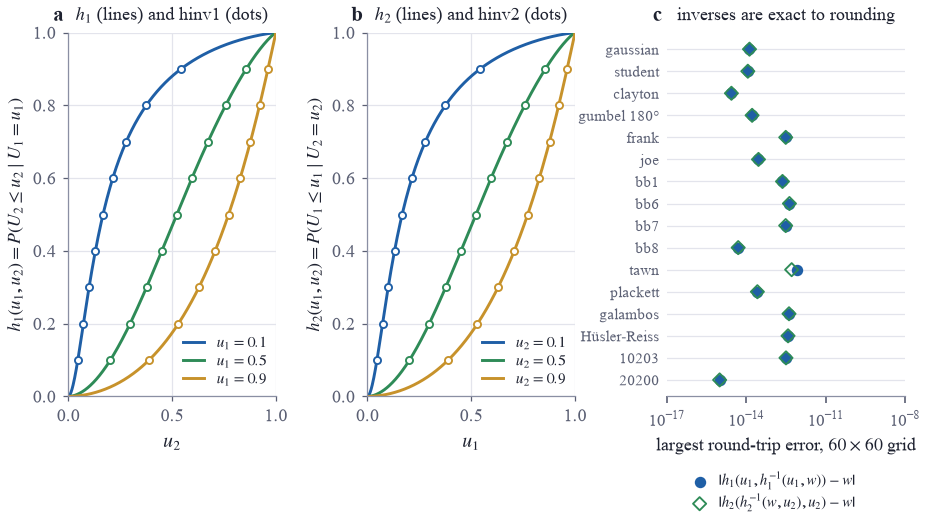
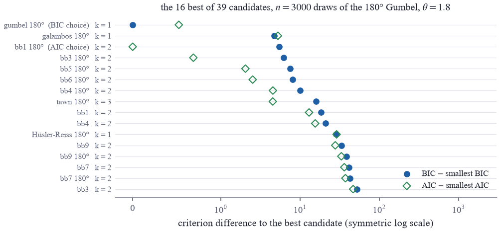

Pair copulas (fv_bicop)¶
fv_bicop holds one bivariate copula \(C(u_1, u_2)\). It is the building block of every vine
edge, but it is also useful on its own: to evaluate a known copula, to fit one family, or to
let fortvine choose the family and rotation for a pair of variables.
Fields¶
| field | type | default | meaning |
|---|---|---|---|
family |
integer |
FV_INDEP (0) |
family code: 0 to 25 for the hand-coded families, \(\ge 10000\) for the generic engine. See the catalogue. |
rotation |
integer |
0 | 0, 90, 180 or 270 (counter-clockwise, in degrees). Ignored by rotationless families, see Rotations. |
par(3) |
real(dp) |
0 | parameters; only the first npars() entries are used. The order is the one of the catalogue. |
loglik |
real(dp) |
0 | log-likelihood (weighted if weights were given) of the last fit or select. Not updated by evaluation methods. |
aux(:) |
real(dp), allocatable |
unallocated | estimate of the nonparametric families FV_TLL / FV_BERNSTEIN (length NAUX = 933). Allocated by fit and select. See Nonparametric families. |
The fields are public: you may set family, rotation and par directly and then evaluate.
No validation happens at assignment; evaluation clips parameters to the range in which the
formulas are defined (for example Gaussian \(\rho\) to \(\pm 0.999999\), Student \(\nu\) to
\([2, 100]\)), so out-of-range values give the density of the nearest admissible copula rather
than an error.
Methods at a glance¶
| method | kind | result |
|---|---|---|
pdf(u1, u2, out) |
subroutine | density \(c(u_1, u_2)\) |
logpdf(u1, u2, out) |
subroutine | \(\log c(u_1, u_2)\) (computed directly in log space) |
cdf(u1, u2, out) |
subroutine | distribution function \(C(u_1, u_2)\) |
hfunc1(u1, u2, out) |
subroutine | \(h_1 = \partial C / \partial u_1 = P(U_2 \le u_2 \mid U_1 = u_1)\) |
hfunc2(u1, u2, out) |
subroutine | \(h_2 = \partial C / \partial u_2 = P(U_1 \le u_1 \mid U_2 = u_2)\) |
hinv1(u1, u2, out) |
subroutine | the \(v\) with \(h_1(u_1, v) = u_2\) |
hinv2(u1, u2, out) |
subroutine | the \(v\) with \(h_2(v, u_2) = u_1\) |
fit(u1, u2 [, ctl, weights]) |
subroutine | maximum-likelihood (or tau-inversion) parameters for the current family and rotation |
select(u1, u2 [, ctl, weights]) |
subroutine | family, rotation and parameters chosen by a criterion |
npars() |
integer function | number of parameters |
npars_eff() |
real function | number of parameters, or the effective degrees of freedom of a nonparametric estimate |
All evaluation methods take three arrays of the same length: u1(:), u2(:) (input) and
out(:) (output). Signatures with argument tables are in the
API reference. The Python class Bicop has the same methods
(cop.pdf(u), cop.cdf(u), cop.hfunc1(u), ... on an \(n \times 2\) array, cop.npars); in
R they are dbicop(u, cop), dbicop(u, cop, log = TRUE), pbicop(u, cop), hbicop(u, 1, cop),
hbicop(u, 2, cop), hbicop(u, 1, cop, inverse = TRUE), hbicop(u, 2, cop, inverse = TRUE)
and cop$npars. In both bindings npars is the value of npars_eff: the effective degrees
of freedom for a nonparametric estimate (see the Python and R
pages).
No generic eval
The typed object has one method per quantity instead of a single eval with a selector.
The selector-style routine exists in the kernel and C interface (fv_bicop_eval, with
what = 0 logpdf, 1 pdf, 2 hfunc1, 3 hfunc2, 4 hinv1, 5 hinv2), see the
C interface.
Density and distribution function¶
pdf returns \(\max(e^{\log c}, \text{tiny})\), so it never returns exactly zero; logpdf
returns the logarithm without that floor. The density of every family is written in log
space, which keeps it finite deep in the tails and for strong dependence (see
Numerics).
cdf is available for every family. It is in closed form wherever one exists: the
Archimedean and extreme-value families directly, the Gaussian through a bivariate-normal
integral routine, TLL as the exact integral of its bilinear interpolant, Bernstein as a sum
of binomial terms. The Student copula has no closed form; its CDF is computed as
\(C(u_1, u_2) = \int_0^{u_1} h_1(s, u_2)\, ds\) with 16-point Gauss-Legendre rules on 8 equal
panels. Its accuracy is of the order of \(10^{-6}\) (for \(\rho = 0.7\), \(\nu = 4\) the
largest deviation of \(\partial C/\partial u_1\) from \(h_1\) on a \(9 \times 9\) grid is
\(2.4 \cdot 10^{-6}\), and \(C(1, 0.3) = 0.2999991\)), which is ample for probabilities but
worth knowing if you difference the CDF over very small rectangles.

h-functions and their inverses¶
The two h-functions are the conditional distribution functions of one margin given the other:
The numeral names the conditioning argument. The inverses keep the conditioning value in the same slot as the h-function they invert:
| call | solves for | conditioning value | level |
|---|---|---|---|
hinv1(u1, w, v) |
\(v\) with \(h_1(u_1, v) = w\) | first argument | second argument |
hinv2(w, u2, v) |
\(v\) with \(h_2(v, u_2) = w\) | second argument | first argument |
This is the vinecopulib convention, and it is what makes hinv1 a sampler: if \(U_1\) and \(W\)
are independent uniforms then \((U_1, h_1^{-1}(U_1, W))\) has distribution \(C\).
Closed-form inverses are used for the Gaussian, Student, Clayton and Frank families, and a monotone Newton iteration in a transformed variable for Gumbel and Joe; other families use a bracketed Newton iteration on the exact h-function with the density as its derivative. The result is clipped to \([0, 1]\).
Round trips are exact to rounding
hfunc1(u1, hinv1(u1, w)) reproduces w to about \(10^{-14}\) for the parametric families
(see the example below), which is what makes Rosenblatt transforms and simulation in a
vine reliable.

Fitting a given family¶
fit estimates the parameters of the family and rotation already stored in the object:
What happens inside (details in Fitting and selection):
- The data are rotated, and Kendall's \(\tau\) of the rotated pair is computed
(
ctl%tau_mode; weighted \(\tau\) if weights are given). - A start value and a search box are derived. For the one-parameter families Gaussian,
Clayton, Gumbel, Frank and Joe, and for the Student, the start is the \(\tau\)-inversion
and the box is narrowed to the parameters of \(\tau \pm 0.1\) (as vinecopulib does). Other
families start from family-specific grids inside the full box of
fv_par_bounds. - The maximum-likelihood estimate in that box is found with exact parameter scores (Fisher scoring with BFGS refinement; closed-form or one-dimensional Newton for the five one-parameter families). For \(n > 1800\) the search runs on a stride subsample first and is then polished on all observations.
The controls that matter for fit are method, fast_mle, tau_mode and nthreads
(Python: the keyword arguments method, fast_mle, tau_mode, num_threads; R:
par_method and cores).
ctl%method / ctl%fast_mle |
Gaussian, Clayton, Gumbel, Frank, Joe | Student | other families |
|---|---|---|---|
FV_MLE (default) |
MLE | MLE of \((\rho, \nu)\) | MLE |
FV_MLE + fast_mle = .true. |
\(\tau\)-inversion, no optimisation | MLE | MLE |
FV_ITAU |
\(\tau\)-inversion | \(\rho = \sin(\pi\tau/2)\), \(\nu\) by MLE | not supported (see warning) |
FV_ITAU with families that have no tau inversion
In select, FV_ITAU silently restricts the candidates to families 0 to 6. A direct
fit of another family with ctl%method = FV_ITAU does not fall back to MLE: it
evaluates the likelihood at a zero parameter vector, which is not a valid estimate.
Use FV_MLE for those families.
The independence copula has nothing to fit: fit sets par = 0 and loglik = 0.
Selecting the family¶
select tries every family of ctl%family_set(1:ctl%nfam) in every admissible rotation,
fits each candidate and keeps the one with the best criterion ctl%selcrit:
- With the default
allow_rotations = .true.a rotatable family is tried at 0 and 180 degrees when \(\hat\tau > 0\) and at 90 and 270 degrees when \(\hat\tau < 0\); rotationless families once. - With
preselect = .true.(default) candidates whose tail behaviour contradicts the data are dropped before fitting, see Fitting. - Candidates are fitted in parallel, and slow candidates that cannot win are abandoned early (racing, see Fitting).
The criteria are log-likelihood, AIC, BIC, mBIC (with prior ctl%psi0) and mBICv; for a
single pair copula FV_MBICV behaves like FV_MBIC. The formulas are in
Fitting. Independence is among the default candidates, so a
weakly dependent pair can legitimately come back as FV_INDEP.

Number of parameters¶
npars() returns 0 for independence, 1 for the one-parameter families, 2 for Student, the
BB families, BB2 to BB10 and t-EV, 3 for Tawn, and gen_npar(family) (1 to 3) for the
generic families. For TLL and Bernstein it returns the rounded effective degrees
of freedom. npars_eff() returns the same count as a real number, with the unrounded effective
degrees of freedom of a nonparametric fit (aux(2); 0 before a fit).
Parameter bounds¶
fv_par_bounds(fam, lb, ub) returns the box in which the MLE is searched. The box of the
hand-coded families:
| code | family | lower | upper |
|---|---|---|---|
| 1 | gaussian | \(\rho \ge -1\) | \(\rho \le 1\) |
| 2 | student | \(\rho \ge -1\), \(\nu \ge 2\) | \(\rho \le 1\), \(\nu \le 30\) |
| 3 | clayton | \(\theta \ge 10^{-10}\) | 28 |
| 4 | gumbel | 1 | 50 |
| 5 | frank | \(-35\) | 35 |
| 6 | joe | 1 | 30 |
| 7 | bb1 | \((0, 1)\) | \((7, 7)\) |
| 8 | bb6 | \((1, 1)\) | \((6, 8)\) |
| 9 | bb7 | \((1, 0.01)\) | \((6, 25)\) |
| 10 | bb8 | \((1, 10^{-4})\) | \((8, 1)\) |
| 11 | tawn | \((0, 0, 1)\) | \((1, 1, 60)\) |
| 12 | plackett | \(10^{-3}\) | \(10^{3}\) |
| 13 | fgm | \(-1\) | 1 |
| 14 | amh | \(-1\) | 0.9999 |
| 15, 16 | galambos, husler_reiss | 0.01 | 30 |
| 17 | bb2 | \((0.01, 0.01)\) | \((30, 30)\) |
| 18, 19, 20 | bb3, bb5, bb9 | \((1, 0.01)\) | \((10, 30)\) |
| 21 | bb10 | \((0.01, 0)\) | \((30, 1)\) |
| 22 | bb4 | \((0.01, 0.01)\) | \((15, 15)\) |
| 23 | tev | \((-0.95, 1)\) | \((0.99, 30)\) |
Independence, TLL and Bernstein return lb = ub = 0. The boxes of the generic families
follow from their generator and Pickands parts, see The generic engine.
These boxes bound the search; evaluation accepts parameters outside them (for example a
Gumbel with \(\theta = 80\) evaluates fine), but fit will not return such values.
Weights¶
fit and select accept weights(n), one non-negative weight per observation. The
log-likelihood becomes \(\sum_i w_i \log c(u_{i1}, u_{i2})\), Kendall's \(\tau\) used for starts
and preselection becomes the weighted \(\tau_b\), and loglik reports the weighted sum. Weights
are not normalised: doubling all of them doubles loglik. The BIC-type penalties still use
the number of observations \(n\), not \(\sum_i w_i\).
A complete example¶
program bicop_demo
use fortvine_api
implicit none
integer, parameter :: dp = kind(1.0d0), n = 3000
type(fv_bicop) :: cop, fit, best
type(fv_controls) :: ctl
real(dp) :: u1(n), u2(n), w(n), h(n), back(n), c(3), wt(n)
real(dp) :: a(3) = [0.2_dp, 0.5_dp, 0.8_dp], b(3) = [0.3_dp, 0.5_dp, 0.9_dp]
integer :: i
! a 180-degree rotated Gumbel (lower-tail dependence), theta = 1.8
cop%family = FV_GUMBEL; cop%rotation = 180; cop%par(1) = 1.8_dp
call cop%pdf(a, b, c); print '(a,3f9.4)', 'pdf ', c
call cop%cdf(a, b, c); print '(a,3f9.4)', 'cdf ', c
call cop%hfunc1(a, b, c); print '(a,3f9.4)', 'hfunc1 ', c
! simulation: u2 = hinv1(u1, w) turns independent uniforms into a sample of the copula
call random_seed(put=[(3 * i + 1, i = 1, 33)])
call random_number(u1); call random_number(w)
call cop%hinv1(u1, w, u2)
call cop%hfunc1(u1, u2, h); print '(a,es9.2)', 'max |hfunc1(u1, hinv1(u1, w)) - w| =', maxval(abs(h - w))
call cop%hfunc2(u1, u2, h); call cop%hinv2(h, u2, back)
print '(a,es9.2)', 'max |hinv2(hfunc2(u1, u2), u2) - u1| =', maxval(abs(back - u1))
! fit a fixed family and rotation
fit%family = FV_GUMBEL; fit%rotation = 180
call fit%fit(u1, u2)
print '(a,f8.4,a,f10.2)', 'fit: theta =', fit%par(1), ' loglik =', fit%loglik
! choose family and rotation by BIC (default controls), then by AIC
call best%select(u1, u2)
print '(3a,i0,a,2f8.4)', 'BIC choice: ', trim(fv_fam_name(best%family)), ' rot ', best%rotation, ' par', best%par(1:2)
ctl%selcrit = FV_AIC
call best%select(u1, u2, ctl)
print '(3a,i0,a,i0)', 'AIC choice: ', trim(fv_fam_name(best%family)), ' rot ', best%rotation, ' npars ', best%npars()
! observation weights: here the second half of the sample counts twice
wt = 1.0_dp; wt(n / 2 + 1:) = 2.0_dp
call fit%fit(u1, u2, weights=wt)
print '(a,f8.4,a,f10.2)', 'weighted fit: theta =', fit%par(1), ' weighted loglik =', fit%loglik
end program bicop_demo
import numpy as np
import fortvine as fv
n = 3000
a = np.array([[0.2, 0.3], [0.5, 0.5], [0.8, 0.9]])
# a 180-degree rotated Gumbel (lower-tail dependence), theta = 1.8
cop = fv.Bicop("gumbel", 180, [1.8])
print("pdf " + "".join(f"{x:9.4f}" for x in cop.pdf(a)))
print("cdf " + "".join(f"{x:9.4f}" for x in cop.cdf(a)))
print("hfunc1 " + "".join(f"{x:9.4f}" for x in cop.hfunc1(a)))
# simulation: u2 = hinv1(u1, w) turns independent uniforms into a sample of the copula
rng = np.random.default_rng(3)
u1, w = rng.random(n), rng.random(n)
u2 = cop.hinv1(np.column_stack([u1, w]))
u = np.column_stack([u1, u2])
h = cop.hfunc1(u)
print(f"max |hfunc1(u1, hinv1(u1, w)) - w| ={np.max(np.abs(h - w)):9.2E}")
back = cop.hinv2(np.column_stack([cop.hfunc2(u), u2]))
print(f"max |hinv2(hfunc2(u1, u2), u2) - u1| ={np.max(np.abs(back - u1)):9.2E}")
# fit a fixed family and rotation
fit = fv.Bicop("gumbel", 180).fit(u)
print(f"fit: theta ={fit.parameters[0]:8.4f} loglik ={fit.loglik():10.2f}")
# choose family and rotation by BIC (the default), then by AIC
best = fv.Bicop().select(u)
print(f"BIC choice: {best.family} rot {best.rotation} par" + "".join(f"{p:8.4f}" for p in best.parameters))
best = fv.Bicop().select(u, criterion="aic")
print(f"AIC choice: {best.family} rot {best.rotation} npars {best.npars}")
# observation weights: here the second half of the sample counts twice
wt = np.ones(n); wt[n // 2:] = 2.0
fit = fv.Bicop("gumbel", 180).fit(u, weights=wt)
print(f"weighted fit: theta ={fit.parameters[0]:8.4f} weighted loglik ={fit.loglik():10.2f}")
library(fortvine)
n <- 3000
a <- rbind(c(0.2, 0.3), c(0.5, 0.5), c(0.8, 0.9))
# a 180-degree rotated Gumbel (lower-tail dependence), theta = 1.8
cop <- bicop_dist("gumbel", 180, 1.8)
cat("pdf ", sprintf("%9.4f", dbicop(a, cop)), "\n", sep = "")
cat("cdf ", sprintf("%9.4f", pbicop(a, cop)), "\n", sep = "")
cat("hfunc1 ", sprintf("%9.4f", hbicop(a, 1, cop)), "\n", sep = "")
# simulation: u2 = hinv1(u1, w) turns independent uniforms into a sample of the copula
set.seed(3)
u1 <- runif(n); w <- runif(n)
u2 <- hbicop(cbind(u1, w), 1, cop, inverse = TRUE)
u <- cbind(u1, u2)
h <- hbicop(u, 1, cop)
cat(sprintf("max |hfunc1(u1, hinv1(u1, w)) - w| =%9.2E\n", max(abs(h - w))))
back <- hbicop(cbind(hbicop(u, 2, cop), u2), 2, cop, inverse = TRUE)
cat(sprintf("max |hinv2(hfunc2(u1, u2), u2) - u1| =%9.2E\n", max(abs(back - u1))))
# fit a fixed family and rotation
fit <- bicop(u, family_set = "gumbel", rotation = 180)
cat(sprintf("fit: theta =%8.4f loglik =%10.2f\n", fit$parameters, fit$loglik))
# choose family and rotation by BIC (the default), then by AIC
best <- bicop(u)
cat("BIC choice: ", best$family, " rot ", best$rotation, " par", sprintf("%8.4f", best$parameters),
"\n", sep = "")
best <- bicop(u, selcrit = "aic")
cat("AIC choice: ", best$family, " rot ", best$rotation, " npars ", best$npars, "\n", sep = "")
# observation weights: here the second half of the sample counts twice
wt <- rep(c(1, 2), each = n / 2)
fit <- bicop(u, family_set = "gumbel", rotation = 180, weights = wt)
cat(sprintf("weighted fit: theta =%8.4f weighted loglik =%10.2f\n", fit$parameters, fit$loglik))
Output:
pdf 1.6406 1.3924 1.7906
cdf 0.1472 0.3610 0.7544
hfunc1 0.5258 0.4694 0.8306
max |hfunc1(u1, hinv1(u1, w)) - w| = 5.11E-15
max |hinv2(hfunc2(u1, u2), u2) - u1| = 1.23E-14
fit: theta = 1.8537 loglik = 951.92
BIC choice: galambos rot 180 par 1.1416 0.0000
AIC choice: galambos rot 180 npars 1
weighted fit: theta = 1.8433 weighted loglik = 1387.94
pdf 1.6406 1.3924 1.7906
cdf 0.1472 0.3610 0.7544
hfunc1 0.5258 0.4694 0.8306
max |hfunc1(u1, hinv1(u1, w)) - w| = 8.99E-15
max |hinv2(hfunc2(u1, u2), u2) - u1| = 2.56E-14
fit: theta = 1.7515 loglik = 855.48
BIC choice: gumbel rot 180 par 1.7515
AIC choice: bb1 rot 180 npars 2
weighted fit: theta = 1.7485 weighted loglik = 1290.62
pdf 1.6406 1.3924 1.7906
cdf 0.1472 0.3610 0.7544
hfunc1 0.5258 0.4694 0.8306
max |hfunc1(u1, hinv1(u1, w)) - w| = 1.58E-14
max |hinv2(hfunc2(u1, u2), u2) - u1| = 5.44E-15
fit: theta = 1.8219 loglik = 904.96
BIC choice: gumbel rot 180 par 1.8219
AIC choice: bb6 rot 180 npars 2
weighted fit: theta = 1.8140 weighted loglik = 1345.34
The density, CDF and h-function lines are the same in every language; the rest depends on the sample, and the three languages draw different uniforms. On the Fortran sample the selected family is Galambos rather than the true Gumbel (the Python and R samples give Gumbel itself; their AIC choices are two-parameter BB families). Galambos and Gumbel are both one-parameter extreme-value copulas with upper-tail dependence (here rotated to the lower tail) and their densities are very close; with 3000 observations the likelihood slightly prefers Galambos. That is expected behaviour, not a fitting failure.
Threads¶
fit and select use ctl%nthreads (see Performance). The evaluation
methods take no thread argument: they use fv_threads() (the FORTVINE_THREADS variable or
half the logical CPUs) and only go parallel for more than 4096 points. cdf runs on the
OpenMP default team (OMP_NUM_THREADS).